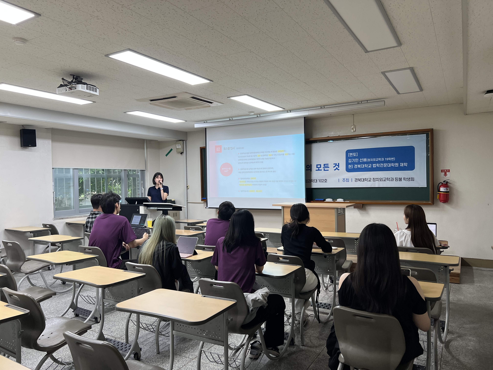

졸업생 멘토링 프로그램
진로 고민이 깊은 재학생들을 위해 진로 탐색 및 취업 정보 교류의 장을 마련하고자 졸업생과 재학생이 함께하는 멘토링 프로그램을 운영했습니다.
수요조사 결과를 기반으로 선호도가 높은 분야의 졸업생을 초청하여 네트워킹을 진행하였으며, 학생들이 진로 관련 실질적 조언을 얻을 수 있었습니다.
졸업생과 재학생 간의 연결을 통해 지속 가능한 정치외교학 공동체를 만들어가는 뜻깊은 계기가 되었습니다.


진로 고민이 깊은 재학생들을 위해 진로 탐색 및 취업 정보 교류의 장을 마련하고자 졸업생과 재학생이 함께하는 멘토링 프로그램을 운영했습니다.
수요조사 결과를 기반으로 선호도가 높은 분야의 졸업생을 초청하여 네트워킹을 진행하였으며, 학생들이 진로 관련 실질적 조언을 얻을 수 있었습니다.
졸업생과 재학생 간의 연결을 통해 지속 가능한 정치외교학 공동체를 만들어가는 뜻깊은 계기가 되었습니다.